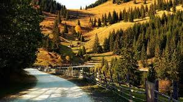
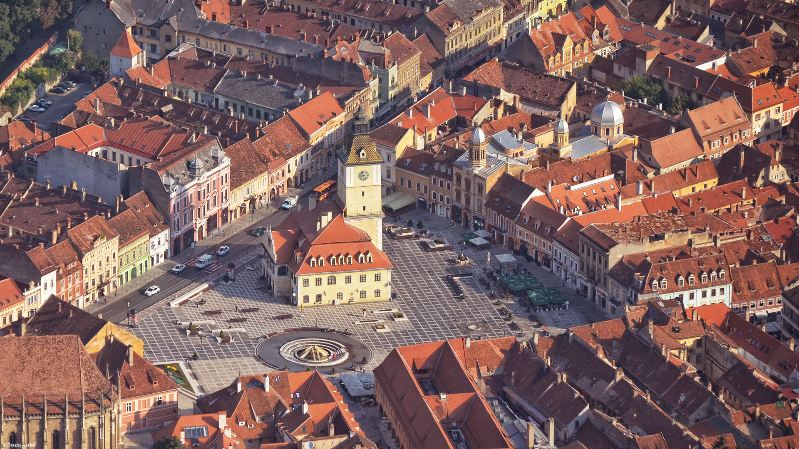
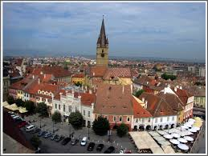
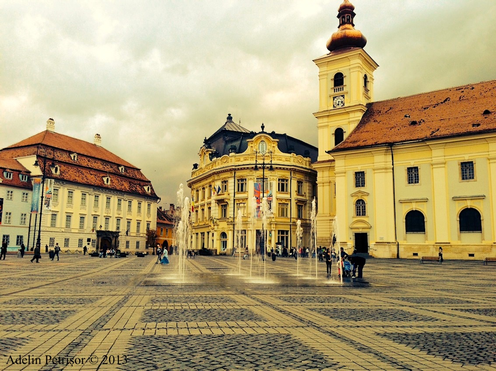

Transilvania este de departe cea mai romantică provincie românească. Chiar numele ei stârneşte imagini ale piscurilor munţilor inalţându-se la cer deasupra văilor împădurite şi a pârâurilor cristaline, imagini ale bisericuţelor din lemn cu acoperişuri înalte, imagini ale castelelor legendare şi amintiri dintr-o istorie zbuciumată.
Acest fascinant oraş medieval este pitoresc aşezat în apropierea muntelui Postăvaru si în îmediata vecinătate a zonei muntoase transilvănene

Sibiul este şi el un frumos oraş construit de saşi, cu străzi pietruite şi case în culori pastelate.Trebuie neapărat să vizitaţi atât Muzeul tehnicii populare în aer liber cât şi Muzeul de artă Brukenthal.
 